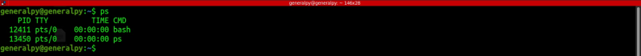
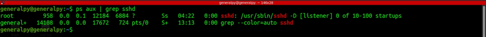

ps command which stands for process status is used to get infromation about the process running in the current terminal.

The PID field gives the process id of the process and is helpful when interacting with the process. TTY shows the current terminal in which that command is run, TIME shows the cumulative process time in hrs:min:sec and CMD field shows the command used to run that process.
ps alone doesn't shows much information. ps alone is a very complex command and very few options of it are commonly used.
-e flag is used to list all processes.
-f is used to show detailed info about each process.
Normally these 2 flags are used with each other.
UID field shows the user running process, PPID is parent PID and STIME is the startime of the process.
Question mark in the TTY field represents tha that process has no running terminal. That process may be a system service or daemon. Assume daemon as a special server which provides a service like sshd(ssh daemon) which provides ssh service, httpd which is apache's daemon to provide web serving etc.
We can use options in ps command in BSD form where there is no dash or unix form where there is a dash in options.
aux flag in ps can be used to get more comprehensive info about the current running tasks.
ps aux | less
• USER = user owning the process
• PID = process ID of the process
• %CPU = It is the CPU time used divided by the time the process has been running.
• %MEM = ratio of the process’s resident set size to the physical memory on the machine
• VSZ = virtual memory usage of entire process (in KiB)
• RSS = resident set size, the non-swapped physical memory that a task has used (in KiB)
• TTY = controlling tty (terminal)
• STAT = multi-character process state
• START = starting time or date of the process
• TIME = cumulative CPU time
• COMMAND = command with all its arguments
Grep is usually used with aux to search for a process.
s
Here we can see a problem with grep when used with aux. When we pipe output of ps to grep, a new process of grep is created with the command grep --color=auto ssh(grep = alias(grep --color=auto)). Hence output also returned the process of grep iteself.
To avoid above probelm, there is another command known as pgrep which is grep for ps .
pgerp by default returns the pid of matched process. Here ssh matched 2 processes and sshd matched 1 process.
To display process name along with id, use -l flag.
Use -u flag and username to search process according to user.
pstree is a visual alternative to ps command. It represents processes in form of tree. Parent children relations are shown.
By default pstree shows identical processes gulped together, we can use -c to remove this feature.